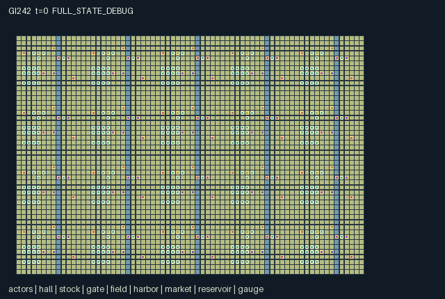

GI242 / SPATIAL
Estuary Council Cities
Release verification episode
Untrained uniform legal actions. Actual JAX state sampled along the full original episode; full-state debug camera. No human performance or learning claim.

Run this game
crucibles play --game 242
Start Python locally, then open the address printed by the terminal. Installation, multiplayer, takeover and keyboard controls →
Objective, rewards & ending
Exact task contract
{
"objective": "Deliver 40 town crop cargos to markets while negotiating physical permits, river access, irrigation and delayed flood protection before H=1024.",
"natural_termination": "Natural completion at 40 cumulative market deliveries; otherwise horizon truncation at 1024.",
"interaction": "Two distinct local contributors within four ticks and a civic witness create a carried permit. Permits compete between gate access and water allocation. Upstream levees redirect a later flood pulse into downstream towns. Open sluices aid access and irrigation but admit floodwater. Ferries, roads and markets alter future cargo choices.",
"observation_access": "Only own prefix and radius-two Chebyshev 5x5 patch with exact listed channels enter the policy. Visible actor identity, role, crew, tools, cargo, stamina and message are in the patch. Each object attribute is in its group channels. Hidden cells and entities remain hidden; global debugger must be labeled. Clock alone is public."
}Declared per-step reward bounds: -8.0 to 8.0. Observability: partially_observable.
Rules
- Twenty towns each contain sixteen independently controlled residents. Tools are exchangeable and original professions remain visible.
- Two different residents must contribute supply at the same assembly within four ticks; a seal-holder must witness before a permit appears.
- Carry a permit to open a river sluice for twelve ticks, or spend it at a reservoir for four irrigation units.
- Levees protect local fields but redirect later flood pressure to the neighboring town downstream. Sluices improve access and can increase exposure.
- Plant, irrigate and harvest actual fields. Carry crops to markets, invest in markets or build roads for cheaper movement.
- Ferries cross the actual river to a free landing. Native action rows can support human selection; the interface is not yet verified.
Original mechanism document (historical status wording retained)
# Estuary Council Cities Status: AUTHORED_NOT_EXECUTED. All gameplay, scripts and causal predictions below are source-derived author hypotheses, not measured results. ## Civic rules and real geography Twenty sixteen-person towns occupy a 70 by 48 estuary grid. Five continuous vertical rivers divide the connected land, with timed sluice crossings at each town and one-way ferry landings. Eight visible professions include builders, farmers, stewards, ferrymen, couriers and traders; tools 1/2/3/4 enable building, irrigation, witnessing and ferry use and can be exchanged. Supply units are explicit combined construction/seed kits. Initial builder 0 and farmer 1 of each town carry two and one units. At the assembly, action 6 contributes a unit. The first contributor opens a four-tick window. A second contributor must have a different actor identity; the ledger records the first actor. A nearby civic-tool holder must witness (7) while two credits and time remain. A grant creates one physical permit at the hall; action 8 picks it up into empty hands. The permit can be handed over, consumed at the gate (9) to open twelve ticks, or consumed at the reservoir (10) for four water units. A permit cannot satisfy both uses. Contributions expire without a valid witness; later independent assemblies are possible. Action 11 invests supply into a levee at a flood gauge, up to strength two. Flood pressure moves from a town to the next real town east on a later step. The upstream levee increases the redirected component when pressure is present. Locally, a levee reduces exposure while an old open sluice adds two exposure units. This is a bounded discrete pressure model, not a mass-conserving fluid solver. Seeded tide offsets only affect the first upstream town in each row. Flood level at least three damages existing crops by three maturity units. A gate can improve irrigation and movement while worsening exposure during a pulse. Action 12 moves a tool-4 actor from the harbor across the river to a free west landing. It is one-way; a return requires the town gate or another route. A newly occupied landing cancels the ferry. Roads (17) consume supply underfoot and remove walking stamina cost on road destination cells. A levee is a real blocked tile; construction is canceled if an actor moves onto its site in that step. Market investment (18) consumes supply and raises future crop prices up to two levels. Fields start at maturity two and moisture two. Irrigation (13) requires a farming tool and consumes reservoir water. Existing wet crops gain maturity every fourth tick; planting (14) consumes supply on an empty field; harvest (15) loads one crop when maturity reaches eight. Sell (16) physically transfers the carried crop at a market. Tool exchange (19) and cargo/message handoff (20) are reciprocal adjacent actions. ## Incentives and intended alternatives Residents can coordinate a gate permit for voyages, allocate it to irrigation, or withhold witness labor; supply invested in local levees can impose delayed exposure downstream. Roads and market upgrades compete with planting and assembly costs. Ferry labor provides an alternative to temporary gates. These are source-defined alternatives without measured equilibrium or learning claims. Each nonrest action costs 0.01. Donations, levees, roads and market investments cost an additional 0.02. A sale pays its actor 1 plus 0.25 per old market level, and each resident of that market town 0.04. Each damaged town field costs all its residents 0.08. Natural completion is 40 cumulative crop cargos sold; otherwise H=1024 ends the episode. Public decisions are embodied in local action, supplied inventory and physical permits, with no implemented free-text negotiation or off-map voting. ## Literal diagnostics Script one contributes from actor 0, then from actor 1 while actor 2 witnesses, then actor 1 picks up the expected permit. Script two moves ferryman 3 through the explicit cross-river action and then west. The paired hypothesis removes only actor 2's witness at the second contribution and uses identical later rest actions. Expected permit and expiry differences are unexecuted hypotheses. ## Native boundary and local information Every listed actor is an independently selectable row of the same int32 action vector. Human or AI control uses that unchanged row; a frontend, keyboard binding, animation, camera, agent-keyed adapter and human usability have not been implemented or verified by this author. All actors remain active. Rest restores one stamina unit; exertion consumes one, with documented game-specific additions. Movement is cardinal; destinations occupied at the start of a step cannot be entered. Simultaneous claims for an empty destination favor the lowest actor index. Spatial interactions use start-of-step positions and Manhattan distance at most one to the nearest relevant object, unless a specific rule says otherwise. Tool exchange requires both adjacent actors to choose exchange and mutually select each other. Invalid or out-of-range actions become rest deterministically. Each role receives the own-state prefix plus a 5x5 radius-two patch. The manifest lists every channel and normalization; the renderer's entity masks and map mask are derived from the same radius. Out-of-world patch cells are all -1. There is no omniscient policy feed. Agent IDs, fixed role and home crew are public metadata; current tools, cargo, stamina, messages and world attributes are visible only in the patch. Entity positions are used by movement, proximity, ecology or construction; none are layout-only proxies. A nonterminal call advances the int32 clock once. Natural completion has priority over horizon truncation. A terminal raw call preserves every state leaf, observation and terminal cause, returns zero reward and all dones true, and does not reset. All boundary/state integers are int32; the supplied uint32 key is used only through JAX randomness and is not copied into state. State keys/shapes remain fixed. Rewards declare conservative [-8,8] bounds and observations [-1,1]; these are interface ranges, not scientific performance gates. Concurrency, bounds, terminal absorption, JIT/vmap, causal effects, throughput and numerical parity remain unverified. ## Source-line evidence - candidate.py:122 'grant =': distinct contributions and witness release a permit - candidate.py:139 'n["pending"]': levees redirect delayed pressure to a different town - candidate.py:133 'flood =': opened sluice changes local flood exposure - candidate.py:106 'ferry =': free landing and actual river transport - candidate.py:129 'n["sluice"]': physical carried permit changes gate duration ## Provenance and limits The source is original for this batch and train split. Only current batch authority, four assigned design/request pairs, population/family direction, human-playability addendum and copied interface contracts/templates were read. No prior candidate, IR, result, training, heldout or memory was read; no remote query was made. Official repository references were allowed but not read or copied. The family inspiration comes solely from the supplied design direction: no commercial assets or upstream game implementation is included. PureJaxRL/Craftax baseline code is not used as a game or learner replacement. The two literal scripts and the paired single-action hypothesis in playthrough.json are unexecuted diagnostics, not a controller restriction or proof of task success. Source-authored invariants and bounds await the independent sealed validator. No candidate import, Python candidate execution, JAX/NumPy computation, validator, training, replay, browser session, human play, accepted R0/M0, solvability, learning, strategic richness, non-isomorphism or transfer result is claimed. Zero, negative, failed, missing and indeterminate outcomes remain admissible.
Commands
Roles & abilities
agent_0 builder of town 0
agent_1 farmer of town 0
agent_2 steward of town 0
agent_3 ferryman of town 0
agent_4 courier of town 0
agent_5 trader of town 0
agent_6 engineer of town 0
agent_7 gate keeper of town 0
agent_8 builder of town 0
agent_9 farmer of town 0
agent_10 steward of town 0
agent_11 ferryman of town 0
agent_12 courier of town 0
agent_13 trader of town 0
agent_14 engineer of town 0
agent_15 gate keeper of town 0
agent_16 builder of town 1
agent_17 farmer of town 1
agent_18 steward of town 1
agent_19 ferryman of town 1
agent_20 courier of town 1
agent_21 trader of town 1
agent_22 engineer of town 1
agent_23 gate keeper of town 1
agent_24 builder of town 1
agent_25 farmer of town 1
agent_26 steward of town 1
agent_27 ferryman of town 1
agent_28 courier of town 1
agent_29 trader of town 1
agent_30 engineer of town 1
agent_31 gate keeper of town 1
agent_32 builder of town 2
agent_33 farmer of town 2
agent_34 steward of town 2
agent_35 ferryman of town 2
agent_36 courier of town 2
agent_37 trader of town 2
agent_38 engineer of town 2
agent_39 gate keeper of town 2
agent_40 builder of town 2
agent_41 farmer of town 2
agent_42 steward of town 2
agent_43 ferryman of town 2
agent_44 courier of town 2
agent_45 trader of town 2
agent_46 engineer of town 2
agent_47 gate keeper of town 2
agent_48 builder of town 3
agent_49 farmer of town 3
agent_50 steward of town 3
agent_51 ferryman of town 3
agent_52 courier of town 3
agent_53 trader of town 3
agent_54 engineer of town 3
agent_55 gate keeper of town 3
agent_56 builder of town 3
agent_57 farmer of town 3
agent_58 steward of town 3
agent_59 ferryman of town 3
agent_60 courier of town 3
agent_61 trader of town 3
agent_62 engineer of town 3
agent_63 gate keeper of town 3
agent_64 builder of town 4
agent_65 farmer of town 4
agent_66 steward of town 4
agent_67 ferryman of town 4
agent_68 courier of town 4
agent_69 trader of town 4
agent_70 engineer of town 4
agent_71 gate keeper of town 4
agent_72 builder of town 4
agent_73 farmer of town 4
agent_74 steward of town 4
agent_75 ferryman of town 4
agent_76 courier of town 4
agent_77 trader of town 4
agent_78 engineer of town 4
agent_79 gate keeper of town 4
agent_80 builder of town 5
agent_81 farmer of town 5
agent_82 steward of town 5
agent_83 ferryman of town 5
agent_84 courier of town 5
agent_85 trader of town 5
agent_86 engineer of town 5
agent_87 gate keeper of town 5
agent_88 builder of town 5
agent_89 farmer of town 5
agent_90 steward of town 5
agent_91 ferryman of town 5
agent_92 courier of town 5
agent_93 trader of town 5
agent_94 engineer of town 5
agent_95 gate keeper of town 5
agent_96 builder of town 6
agent_97 farmer of town 6
agent_98 steward of town 6
agent_99 ferryman of town 6
agent_100 courier of town 6
agent_101 trader of town 6
agent_102 engineer of town 6
agent_103 gate keeper of town 6
agent_104 builder of town 6
agent_105 farmer of town 6
agent_106 steward of town 6
agent_107 ferryman of town 6
agent_108 courier of town 6
agent_109 trader of town 6
agent_110 engineer of town 6
agent_111 gate keeper of town 6
agent_112 builder of town 7
agent_113 farmer of town 7
agent_114 steward of town 7
agent_115 ferryman of town 7
agent_116 courier of town 7
agent_117 trader of town 7
agent_118 engineer of town 7
agent_119 gate keeper of town 7
agent_120 builder of town 7
agent_121 farmer of town 7
agent_122 steward of town 7
agent_123 ferryman of town 7
agent_124 courier of town 7
agent_125 trader of town 7
agent_126 engineer of town 7
agent_127 gate keeper of town 7
agent_128 builder of town 8
agent_129 farmer of town 8
agent_130 steward of town 8
agent_131 ferryman of town 8
agent_132 courier of town 8
agent_133 trader of town 8
agent_134 engineer of town 8
agent_135 gate keeper of town 8
agent_136 builder of town 8
agent_137 farmer of town 8
agent_138 steward of town 8
agent_139 ferryman of town 8
agent_140 courier of town 8
agent_141 trader of town 8
agent_142 engineer of town 8
agent_143 gate keeper of town 8
agent_144 builder of town 9
agent_145 farmer of town 9
agent_146 steward of town 9
agent_147 ferryman of town 9
agent_148 courier of town 9
agent_149 trader of town 9
agent_150 engineer of town 9
agent_151 gate keeper of town 9
agent_152 builder of town 9
agent_153 farmer of town 9
agent_154 steward of town 9
agent_155 ferryman of town 9
agent_156 courier of town 9
agent_157 trader of town 9
agent_158 engineer of town 9
agent_159 gate keeper of town 9
agent_160 builder of town 10
agent_161 farmer of town 10
agent_162 steward of town 10
agent_163 ferryman of town 10
agent_164 courier of town 10
agent_165 trader of town 10
agent_166 engineer of town 10
agent_167 gate keeper of town 10
agent_168 builder of town 10
agent_169 farmer of town 10
agent_170 steward of town 10
agent_171 ferryman of town 10
agent_172 courier of town 10
agent_173 trader of town 10
agent_174 engineer of town 10
agent_175 gate keeper of town 10
agent_176 builder of town 11
agent_177 farmer of town 11
agent_178 steward of town 11
agent_179 ferryman of town 11
agent_180 courier of town 11
agent_181 trader of town 11
agent_182 engineer of town 11
agent_183 gate keeper of town 11
agent_184 builder of town 11
agent_185 farmer of town 11
agent_186 steward of town 11
agent_187 ferryman of town 11
agent_188 courier of town 11
agent_189 trader of town 11
agent_190 engineer of town 11
agent_191 gate keeper of town 11
agent_192 builder of town 12
agent_193 farmer of town 12
agent_194 steward of town 12
agent_195 ferryman of town 12
agent_196 courier of town 12
agent_197 trader of town 12
agent_198 engineer of town 12
agent_199 gate keeper of town 12
agent_200 builder of town 12
agent_201 farmer of town 12
agent_202 steward of town 12
agent_203 ferryman of town 12
agent_204 courier of town 12
agent_205 trader of town 12
agent_206 engineer of town 12
agent_207 gate keeper of town 12
agent_208 builder of town 13
agent_209 farmer of town 13
agent_210 steward of town 13
agent_211 ferryman of town 13
agent_212 courier of town 13
agent_213 trader of town 13
agent_214 engineer of town 13
agent_215 gate keeper of town 13
agent_216 builder of town 13
agent_217 farmer of town 13
agent_218 steward of town 13
agent_219 ferryman of town 13
agent_220 courier of town 13
agent_221 trader of town 13
agent_222 engineer of town 13
agent_223 gate keeper of town 13
agent_224 builder of town 14
agent_225 farmer of town 14
agent_226 steward of town 14
agent_227 ferryman of town 14
agent_228 courier of town 14
agent_229 trader of town 14
agent_230 engineer of town 14
agent_231 gate keeper of town 14
agent_232 builder of town 14
agent_233 farmer of town 14
agent_234 steward of town 14
agent_235 ferryman of town 14
agent_236 courier of town 14
agent_237 trader of town 14
agent_238 engineer of town 14
agent_239 gate keeper of town 14
agent_240 builder of town 15
agent_241 farmer of town 15
agent_242 steward of town 15
agent_243 ferryman of town 15
agent_244 courier of town 15
agent_245 trader of town 15
agent_246 engineer of town 15
agent_247 gate keeper of town 15
agent_248 builder of town 15
agent_249 farmer of town 15
agent_250 steward of town 15
agent_251 ferryman of town 15
agent_252 courier of town 15
agent_253 trader of town 15
agent_254 engineer of town 15
agent_255 gate keeper of town 15
agent_256 builder of town 16
agent_257 farmer of town 16
agent_258 steward of town 16
agent_259 ferryman of town 16
agent_260 courier of town 16
agent_261 trader of town 16
agent_262 engineer of town 16
agent_263 gate keeper of town 16
agent_264 builder of town 16
agent_265 farmer of town 16
agent_266 steward of town 16
agent_267 ferryman of town 16
agent_268 courier of town 16
agent_269 trader of town 16
agent_270 engineer of town 16
agent_271 gate keeper of town 16
agent_272 builder of town 17
agent_273 farmer of town 17
agent_274 steward of town 17
agent_275 ferryman of town 17
agent_276 courier of town 17
agent_277 trader of town 17
agent_278 engineer of town 17
agent_279 gate keeper of town 17
agent_280 builder of town 17
agent_281 farmer of town 17
agent_282 steward of town 17
agent_283 ferryman of town 17
agent_284 courier of town 17
agent_285 trader of town 17
agent_286 engineer of town 17
agent_287 gate keeper of town 17
agent_288 builder of town 18
agent_289 farmer of town 18
agent_290 steward of town 18
agent_291 ferryman of town 18
agent_292 courier of town 18
agent_293 trader of town 18
agent_294 engineer of town 18
agent_295 gate keeper of town 18
agent_296 builder of town 18
agent_297 farmer of town 18
agent_298 steward of town 18
agent_299 ferryman of town 18
agent_300 courier of town 18
agent_301 trader of town 18
agent_302 engineer of town 18
agent_303 gate keeper of town 18
agent_304 builder of town 19
agent_305 farmer of town 19
agent_306 steward of town 19
agent_307 ferryman of town 19
agent_308 courier of town 19
agent_309 trader of town 19
agent_310 engineer of town 19
agent_311 gate keeper of town 19
agent_312 builder of town 19
agent_313 farmer of town 19
agent_314 steward of town 19
agent_315 ferryman of town 19
agent_316 courier of town 19
agent_317 trader of town 19
agent_318 engineer of town 19
agent_319 gate keeper of town 19
Observation permissions
Training receives only the original observation rows. Role cameras use declared visibility; debug cameras are explicitly marked. Local benchmark records log debug exposure and role takeover history.
Exact observation layout
[
{
"slice": [
0,
1
],
"meaning": "native clock / H",
"visibility": "public"
},
{
"slice": [
1,
2
],
"meaning": "own x / (width - 1)",
"visibility": "self"
},
{
"slice": [
2,
3
],
"meaning": "own y / (height - 1)",
"visibility": "self"
},
{
"slice": [
3,
4
],
"meaning": "own stamina / 20",
"visibility": "self"
},
{
"slice": [
4,
5
],
"meaning": "own tool / 4",
"visibility": "self"
},
{
"slice": [
5,
6
],
"meaning": "own cargo kind / 4",
"visibility": "self"
},
{
"slice": [
6,
7
],
"meaning": "own cargo units / 4",
"visibility": "self"
},
{
"slice": [
7,
8
],
"meaning": "own carried information / 4",
"visibility": "self"
},
{
"slice": [
8,
833
],
"meaning": "5 by 5 local patch, dy then dx from -2 through +2, then channel; outside world all -1. Channels: 0=terrain value / 10; 1=actor identity (id + 1) / A; 2=role (role + 1) / R; 3=home crew (team + 1) / C; 4=held tool / 4; 5=cargo type / 4; 6=cargo amount / 4; 7=stamina / 20; 8=carried message / 4; 9=hall identity (index + 1) / capacity; 10=material contributions in current assembly / 2; 11=ticks remaining in assembly / 4; 12=first donor actor index plus one / 320; 13=available carried permit / 1; 14=stock identity (index + 1) / capacity; 15=supply stock / 32; 16=gate identity (index + 1) / capacity; 17=open crossing ticks remaining / 12; 18=field identity (index + 1) / capacity; 19=crop maturity / 8; 20=field moisture / 4; 21=harbor identity (index + 1) / capacity; 22=ferry trips / 1024; 23=market identity (index + 1) / capacity; 24=market investment / 2; 25=delivered crop cargos / 40; 26=reservoir identity (index + 1) / capacity; 27=irrigation water / 8; 28=gauge identity (index + 1) / capacity; 29=levee strength / 2; 30=incoming delayed pressure / 4; 31=local flood pressure / 6; 32=local tide offset / 7",
"visibility": "local"
}
]Entity visibility & attributes
[
{
"id": "actors",
"kind": "agent",
"count": 320,
"position": [
"pos"
],
"active": [
"active"
],
"visibility": [
"agent_visibility"
],
"attributes": [
{
"state_path": [
"role"
],
"meaning": "fixed profession code",
"display": "category"
},
{
"state_path": [
"team"
],
"meaning": "home crew identifier",
"display": "number"
},
{
"state_path": [
"tool"
],
"meaning": "current exchangeable tool code",
"display": "category"
},
{
"state_path": [
"cargo"
],
"meaning": "carried cargo kind",
"display": "category"
},
{
"state_path": [
"load"
],
"meaning": "carried cargo units",
"display": "number"
},
{
"state_path": [
"energy"
],
"meaning": "stamina, 0 to 20",
"display": "bar"
},
{
"state_path": [
"memory"
],
"meaning": "physically carried information code",
"display": "category"
}
]
},
{
"id": "hall",
"kind": "landmark",
"count": 20,
"position": [
"hall_pos"
],
"active": [
"hall_active"
],
"visibility": [
"hall_visibility"
],
"attributes": [
{
"state_path": [
"credits"
],
"meaning": "material contributions in current assembly",
"display": "number"
},
{
"state_path": [
"window"
],
"meaning": "ticks remaining in assembly",
"display": "bar"
},
{
"state_path": [
"first_donor"
],
"meaning": "first donor actor index plus one",
"display": "number"
},
{
"state_path": [
"permit"
],
"meaning": "available carried permit",
"display": "flag"
}
]
},
{
"id": "stock",
"kind": "resource",
"count": 20,
"position": [
"stock_pos"
],
"active": [
"stock_active"
],
"visibility": [
"stock_visibility"
],
"attributes": [
{
"state_path": [
"supplies"
],
"meaning": "supply stock",
"display": "number"
}
]
},
{
"id": "gate",
"kind": "gate",
"count": 20,
"position": [
"gate_pos"
],
"active": [
"gate_active"
],
"visibility": [
"gate_visibility"
],
"attributes": [
{
"state_path": [
"sluice"
],
"meaning": "open crossing ticks remaining",
"display": "bar"
}
]
},
{
"id": "field",
"kind": "resource",
"count": 20,
"position": [
"field_pos"
],
"active": [
"field_active"
],
"visibility": [
"field_visibility"
],
"attributes": [
{
"state_path": [
"growth"
],
"meaning": "crop maturity",
"display": "bar"
},
{
"state_path": [
"wet"
],
"meaning": "field moisture",
"display": "bar"
}
]
},
{
"id": "harbor",
"kind": "landmark",
"count": 20,
"position": [
"harbor_pos"
],
"active": [
"harbor_active"
],
"visibility": [
"harbor_visibility"
],
"attributes": [
{
"state_path": [
"ferry_count"
],
"meaning": "ferry trips",
"display": "number"
}
]
},
{
"id": "market",
"kind": "object",
"count": 20,
"position": [
"market_pos"
],
"active": [
"market_active"
],
"visibility": [
"market_visibility"
],
"attributes": [
{
"state_path": [
"market_level"
],
"meaning": "market investment",
"display": "bar"
},
{
"state_path": [
"sales"
],
"meaning": "delivered crop cargos",
"display": "number"
}
]
},
{
"id": "reservoir",
"kind": "resource",
"count": 20,
"position": [
"reservoir_pos"
],
"active": [
"reservoir_active"
],
"visibility": [
"reservoir_visibility"
],
"attributes": [
{
"state_path": [
"water"
],
"meaning": "irrigation water",
"display": "bar"
}
]
},
{
"id": "gauge",
"kind": "hazard",
"count": 20,
"position": [
"gauge_pos"
],
"active": [
"gauge_active"
],
"visibility": [
"gauge_visibility"
],
"attributes": [
{
"state_path": [
"levee"
],
"meaning": "levee strength",
"display": "bar"
},
{
"state_path": [
"pending"
],
"meaning": "incoming delayed pressure",
"display": "bar"
},
{
"state_path": [
"flood"
],
"meaning": "local flood pressure",
"display": "bar"
},
{
"state_path": [
"tide_phase"
],
"meaning": "local tide offset",
"display": "number"
}
]
}
]Actual verification & provenance
Per-game execution receipt
{
"game": "gi242",
"status": "PASS",
"verification_revision": 2,
"source_sha256": "f0c6cf463d29edd7e5870f6c15c590ca922820e224adf38026aef485afe7b7c7",
"seed": 20261101,
"runtime": {
"jax": "0.4.38",
"numpy": "1.26.4",
"devices": [
"TFRT_CPU_0"
]
},
"dimensions": {
"num_agents": 320,
"observation_size": 833,
"num_actions": 21,
"max_steps": 1024
},
"checks": {
"eager_reset": {
"status": "PASS",
"seconds": 2.948011875152588
},
"observation_spaces_legal_masks": {
"status": "PASS",
"seconds": 1.315666913986206
},
"eager_step": {
"status": "PASS",
"seconds": 2.190481662750244
},
"jit_reset": {
"status": "PASS",
"seconds": 2.530374526977539
},
"jit_step": {
"status": "PASS",
"seconds": 7.586172580718994
},
"eager_jit_integer_parity_float_measurement": {
"status": "PASS",
"seconds": 0.01872563362121582
},
"jit_vmap_reset": {
"status": "PASS",
"seconds": 5.738983631134033
},
"jit_vmap_step": {
"status": "PASS",
"seconds": 8.822403192520142
},
"outer_autoreset_api": {
"status": "PASS",
"seconds": 17.12237048149109
},
"full_original_horizon_episode_and_render": {
"status": "PASS",
"seconds": 38.082356691360474
}
},
"human_scores": null,
"browser_controls": "PENDING",
"failures": [],
"elapsed_seconds": 87.37203359603882,
"float_parity_max_abs": 5.960464477539063e-08,
"numerical_parity": "UNDETERMINED_NONZERO_FLOAT_DIFFERENCE",
"raw_terminal_absorbing": "PASS",
"terminal_outer_reset": "PASS",
"episode_steps": 1024,
"scripted_random_returns": [
-6.259999852627516,
-6.0299998596310616,
-6.299999853596091,
-5.989999860525131,
-6.259999854490161,
-6.029999861493707,
-6.309999855235219,
-6.129999857395887,
-6.169999860227108,
-6.219999855384231,
-6.179999854415655,
-6.0799998585134745,
-5.949999859556556,
-6.289999855682254,
-6.289999857544899,
-6.159999856725335,
-5.559999875724316,
-5.269999882206321,
-5.379999879747629,
-5.619999874383211,
-5.579999875277281,
-5.349999880418181,
-5.329999880865216,
-5.379999879747629,
-5.399999879300594,
-5.469999877735972,
-5.549999875947833,
-5.289999881759286,
-5.649999873712659,
-4.589999865740538,
-5.519999876618385,
-5.589999875053763,
-5.529999876394868,
-5.439999878406525,
-5.599999874830246,
-5.219999883323908,
-5.329999880865216,
-5.479999877512455,
-5.379999879747629,
-5.349999880418181,
-5.369999879971147,
-5.309999881312251,
-5.2999998815357685,
-5.80999987013638,
-5.6599998734891415,
-5.45999987795949,
-5.279999881982803,
-5.2999998815357685,
-5.359999880194664,
-5.289999881759286,
-5.269999882206321,
-5.639999873936176,
-5.399999879300594,
-5.429999878630042,
-5.4199998788535595,
-5.269999882206321,
-5.4199998788535595,
-5.399999879300594,
-5.389999879524112,
-3.7399998735636473,
-4.1999998688697815,
-5.319999881088734,
-5.309999881312251,
-5.479999877512455,
-5.449999878183007,
-5.709999872371554,
-5.569999875500798,
-5.45999987795949,
-5.289999881759286,
-5.389999879524112,
-5.4199998788535595,
-3.769999872893095,
-5.6099998746067286,
-5.349999880418181,
-5.6099998746067286,
-5.599999874830246,
-5.629999874159694,
-5.509999876841903,
-5.579999875277281,
-5.399999879300594,
-6.229999857023358,
-6.289999853819609,
-5.949999857693911,
-6.039999857544899,
-6.359999855980277,
-6.169999856501818,
-5.839999862015247,
-6.029999861493707,
-6.319999853149056,
-6.239999853074551,
-6.009999860078096,
-6.599999846890569,
-6.099999854341149,
-6.1999998558312654,
-6.3899998515844345,
-6.009999858215451,
-5.409999879077077,
-5.479999877512455,
-5.219999883323908,
-5.439999878406525,
-5.249999882653356,
-5.339999880641699,
-5.279999881982803,
-5.309999881312251,
-5.909999867901206,
-5.219999883323908,
-5.199999883770943,
-5.409999879077077,
-5.409999879077077,
-5.479999877512455,
-5.2999998815357685,
-5.909999867901206,
-5.449999878183007,
-5.369999879971147,
-5.349999880418181,
-5.5399998761713505,
-5.349999880418181,
-4.399999869987369,
-5.279999881982803,
-5.469999877735972,
-5.579999875277281,
-5.759999871253967,
-5.329999880865216,
-5.289999881759286,
-5.939999867230654,
-5.429999878630042,
-5.579999875277281,
-5.49999987706542,
-5.429999878630042,
-5.409999879077077,
-5.6099998746067286,
-5.489999877288938,
-5.45999987795949,
-5.429999878630042,
-5.289999881759286,
-5.509999876841903,
-4.409999869763851,
-5.6599998734891415,
-5.399999879300594,
-5.439999878406525,
-5.289999881759286,
-5.80999987013638,
-5.269999882206321,
-5.49999987706542,
-5.469999877735972,
-5.359999880194664,
-5.6099998746067286,
-5.449999878183007,
-5.529999876394868,
-5.579999875277281,
-5.45999987795949,
-5.329999880865216,
-5.369999879971147,
-5.409999879077077,
-5.5399998761713505,
-5.399999879300594,
-5.4199998788535595,
-5.369999879971147,
-5.469999877735972,
-5.439999878406525,
-5.949999863281846,
-5.869999865069985,
-6.029999863356352,
-5.76999986730516,
-6.269999857991934,
-5.689999870955944,
-5.779999867081642,
-5.779999868944287,
-6.0599998626858,
-6.029999861493707,
-5.959999864920974,
-5.549999874085188,
-5.76999986730516,
-5.80999987013638,
-5.739999867975712,
-5.80999986641109,
-5.929999863728881,
-5.959999857470393,
-5.959999863058329,
-6.0999998562037945,
-5.939999859780073,
-6.11999985948205,
-6.1199998538941145,
-5.969999855384231,
-5.869999865069985,
-5.949999861419201,
-6.079999852925539,
-6.13999985344708,
-5.909999864175916,
-6.1799998562783,
-6.0299998596310616,
-5.929999861866236,
-5.679999873042107,
-5.2999998815357685,
-5.259999882429838,
-5.509999876841903,
-5.529999876394868,
-5.489999877288938,
-5.369999879971147,
-5.589999875053763,
-5.439999878406525,
-5.49999987706542,
-5.389999879524112,
-5.6599998734891415,
-5.689999872818589,
-5.399999879300594,
-5.5399998761713505,
-5.389999879524112,
-5.589999875053763,
-5.5399998761713505,
-5.399999879300594,
-5.359999880194664,
-5.669999873265624,
-5.409999879077077,
-5.259999882429838,
-5.439999878406525,
-5.519999876618385,
-5.439999878406525,
-5.529999876394868,
-5.429999878630042,
-5.359999880194664,
-5.279999881982803,
-5.399999879300594,
-5.389999879524112,
-5.679999873042107,
-5.309999881312251,
-5.439999878406525,
-5.269999882206321,
-5.349999880418181,
-5.319999881088734,
-5.309999881312251,
-5.249999882653356,
-5.559999875724316,
-5.359999880194664,
-5.49999987706542,
-5.329999880865216,
-5.239999882876873,
-5.369999879971147,
-5.2999998815357685,
-5.289999881759286,
-6.029999863356352,
-5.819999864324927,
-5.839999865740538,
-5.659999867901206,
-5.8199998661875725,
-6.039999861270189,
-5.9599998611956835,
-5.669999869540334,
-5.789999863132834,
-5.879999864846468,
-5.769999869167805,
-5.6999998688697815,
-6.069999858736992,
-5.619999870657921,
-6.049999861046672,
-5.779999863356352,
-5.549999875947833,
-5.409999879077077,
-5.4199998788535595,
-5.369999879971147,
-5.349999880418181,
-5.269999882206321,
-5.329999880865216,
-4.359999870881438,
-5.489999877288938,
-5.559999875724316,
-5.399999879300594,
-5.379999879747629,
-5.369999879971147,
-5.429999878630042,
-5.279999881982803,
-5.279999881982803,
-5.429999878630042,
-5.289999881759286,
-5.469999877735972,
-5.6599998734891415,
-5.259999882429838,
-5.589999875053763,
-5.329999880865216,
-5.7799998708069324,
-5.219999883323908,
-5.509999876841903,
-5.389999879524112,
-5.49999987706542,
-5.509999876841903,
-5.349999880418181,
-5.259999882429838,
-5.359999880194664,
-5.4199998788535595,
-5.489999877288938,
-5.339999880641699,
-5.519999876618385,
-5.359999880194664,
-5.519999876618385,
-5.329999880865216,
-5.259999882429838,
-5.329999880865216,
-3.909999869763851,
-5.389999879524112,
-5.359999880194664,
-5.329999880865216,
-5.349999880418181,
-5.319999881088734,
-5.369999879971147,
-5.379999879747629,
-5.289999881759286,
-5.529999876394868,
-5.239999882876873,
-5.269999882206321,
-5.369999879971147,
-5.389999879524112,
-5.22999988310039,
-5.2999998815357685,
-5.339999880641699,
-5.4199998788535595,
-5.359999880194664,
-4.239999873563647,
-5.249999882653356,
-5.319999881088734,
-5.329999880865216
],
"terminal": true,
"demo_information": "FULL_STATE_DEBUG",
"demo_frames": 26,
"render_roles_checked": 320
}Chromium control verification
{
"status": "PENDING"
}Original identity and file hashes
{
"id": 242,
"key": "gi242",
"title": "Estuary Council Cities",
"summary": "",
"tags": [],
"family": "spatial",
"dimensions": {
"num_agents": 320,
"observation_size": 833,
"num_actions": 21,
"max_steps": 1024
},
"source_sha256": "f0c6cf463d29edd7e5870f6c15c590ca922820e224adf38026aef485afe7b7c7",
"manifest_sha256": "0ba5037f2aef0b015ebfed0c8753c104fa900e73dd46dfcc9a1fc5212274f9a9",
"files": [
{
"file": "candidate.py",
"sha256": "f0c6cf463d29edd7e5870f6c15c590ca922820e224adf38026aef485afe7b7c7",
"bytes": 18913,
"origin": "work/exp_2/game_incubator_v3/sources/game-v3-00242/attempt_00/candidate.py"
},
{
"file": "manifest.json",
"sha256": "0ba5037f2aef0b015ebfed0c8753c104fa900e73dd46dfcc9a1fc5212274f9a9",
"bytes": 69322,
"origin": "work/exp_2/game_incubator_v3/sources/game-v3-00242/attempt_00/manifest.json"
},
{
"file": "scene.json",
"sha256": "b4423582b3f28fed838add3dcdb1395b4ecc17d2de2eb813f2557e62245895cf",
"bytes": 10781,
"origin": "work/exp_2/game_incubator_v3/sources/game-v3-00242/attempt_00/scene.json"
},
{
"file": "mechanism.md",
"sha256": "1ec95203053274f72eadafeab32b067c3eba80b94c0588fc0c7a679260ae0aad",
"bytes": 7905,
"origin": "work/exp_2/game_incubator_v3/sources/game-v3-00242/attempt_00/mechanism.md"
},
{
"file": "playthrough.json",
"sha256": "7d4f962210b6ce1ce1be4817c89a75a8f58112cb35d926649d64b69490ac78c3",
"bytes": 76789,
"origin": "work/exp_2/game_incubator_v3/sources/game-v3-00242/attempt_00/playthrough.json"
}
],
"original_status": "SOURCE_ONLY",
"original_saved_replay": false,
"release_validation": "PASS",
"human_scores": null,
"browser_validation": "PENDING"
}